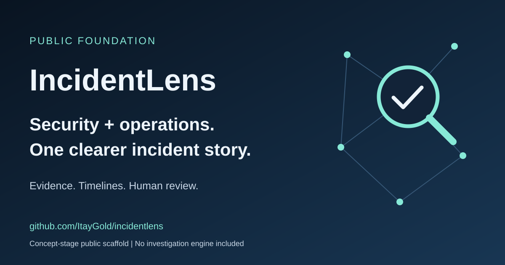

Evidence first
The goal: make observations traceable to source references rather than opaque conclusions.
A shared investigation vision for security and operations. Organize evidence, follow the timeline, and keep facts distinct from hypotheses.

The goal: make observations traceable to source references rather than opaque conclusions.
The goal: show competing hypotheses and missing context without presenting guesses as facts.
The goal: support review and cross-team handoffs, not autonomous production changes.
Documentation, this static page, and a manually authored fictional incident example. No live integrations, collectors, detection, correlation, or AI investigation engine are included.
Read the privacy and trust boundaries. Do not submit sensitive incident data to public issues.